Backoffice Quote Flow with Approvals (BQFA) is a system workflow that defines a sequence of steps and transitions that a quote can go through as a deal progresses, including the steps where a sales person might have to get approval from the authorized person (e.g. their manager) before sending the quote with updated prices to the buyer.
Note
The difference between the simple quote workflow and the one with approval is covered in the Understanding Quote Workflows section.
To reach the workflow:
Note
Since BQFA is a system workflow, it cannot be edited, modified, or deleted.
On the Backoffice Quote Flow with Approvals page, you can perform the following actions:
When the BQFA is activated instead of the simple quote management workflow, and the Price Override Requires Approval option is enabled, the following process is enforced for the quotes where sales person has modified prices:
A sales representative creates a quote for a buyer and sends it to an authorized person (e.g., a sales manager) for review.
Upon the review, a sales manager may do one of the following:
Note
The review step is required only after a sales representative has modified prices in the quote.
Once the quote is approved, the sales representative can send it to a buyer.
To enable approvals for your quote management:
To enable quote approval for users with the particular role (e.g., for all sales managers, to enable peer approval), do the following:
Important
Note that users with the permission to review and approve a quote do not need to (and thus cannot) perform the Send for Review workflow transition. They can send any quote (either created by them or by someone else) directly to the customer.
Depending on the Price Override Requires Approval setting in the workflow configuration, BQFA may use the following strategies:
If the option is disabled, do the following to enable it:
In the main menu, navigate to System > Workflows.
Click Backoffice Quote Flow with Approvals in the workflow list.
The workflow details are shown.
Click Configuration on the top right.
Select the Price Override Requires Approval check box.
Click Save And Close on the top right.
Available options depend on the current status of the quote and your permissions.
Quote status may be one of the following:
The following table describes which options are available for each of the statuses and how the corresponding transitions change the quote status.
Note
Some transitions are available only for a reviewer (Reviewer) and some only for a user without reviewing permissions (Sales). The availability is indicated in the corresponding columns.
A buyer can see only quotes that have been sent to the customer.
| Current Quote Status | Transitions from Step | Reviewer | Sales | New Status |
|---|---|---|---|---|
| Draft | Edit — make changes to the quote draft. | Draft | ||
| Clone — create a copy of the quote. | Draft | |||
| Delete — remove the quote draft. | Deleted | |||
| Send to Customer — send this quote to the customer. If the quote has been modified, this option becomes unavailable for Sales | Sent to Customer | |||
| Submit for Review — send the quote to the authorized person for review. | Submitted for Review | |||
| Submitted for Review | Review — start reviewing the quote. | Under Review | ||
| Under Review | Return — return the quote for refinement. | Open | ||
| Approve and Send to Customer — indicate that you would like to approve the quote and send it to the customer. | Draft | |||
| Approve — grant your approval on the quote. | Approved | |||
| Decline — reject the quote. | Closed | |||
| Approved | Send to Customer — directly send this quote to the customer. | Sent to Customer | ||
| Not Approved | Open | |||
| Sent to Customer | Cancel — call of the quote. | Closed | ||
| Expire — indicate that the quote’s validity period is over. | Closed | |||
| Delete — remove the quota. | Deleted | |||
| Create New Quote — create a copy of the quote. | Sent to Customer | |||
| Declined by Customer — indicate that the customer did not agree to the terms of the quote. | Closed | |||
| Closed | Reopen — actualize the quote again. A new quote with the same data will appear. The current quote remains closed. | Closed | ||
| Deleted | Undelete — restore the quote. | Draft |
Note
The Accept and Decline transitions (from the Sent to Customer step) are reserved for future use.
In the following example, a sales rep Jin Thompson creates a quote and modifies prices for the line items.
As the BQFA is active and the price override requires approval, the sales manager Damara Lira reviews the quote and approves it before Jim sends it to the customer.
Let us go through every step of this process:
Jin creates a quote.
Note
The BQFA workflow starts when Jin saves a quote created from scratch, or from a request for quote received from a buyer. For more information on creating quotes, see Quotes.
A newly created quote is in the Draft status. The line item price is not yet modified, and the quote does not require approval. Jin can send it to the customer.
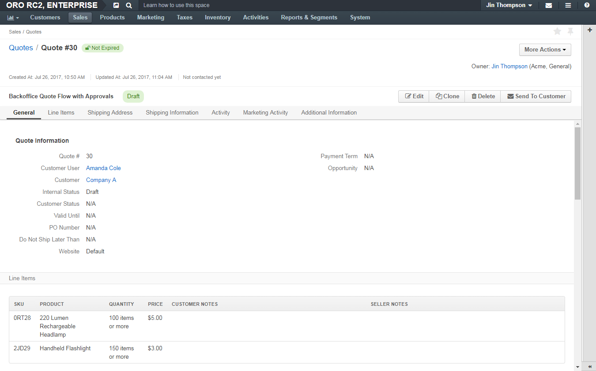As a customer has a positive record and frequently buys headlamps in bulk, they have negotiated a personal discount of 1$ on every headlamp. The new price for the headlamp is 4$ (an MSRP, the best deal Jin could offer).
To reflect the negotiated price in the quote, Jin clicks Edit and updates the headlamp price:
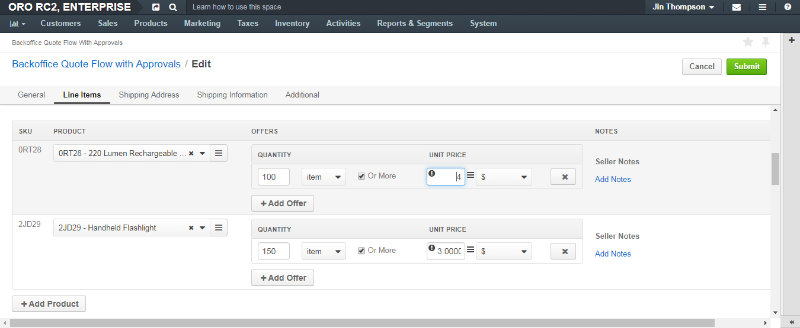When Jin saves the changes, the Send To Customer option becomes hidden, as he cannot send the quote without approval. To get it, Jin has to send the quote for review:
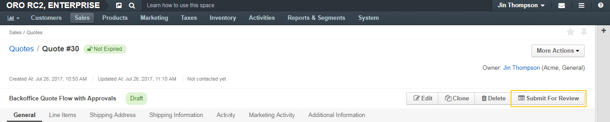
Jin clicks Submit for Review, enters a message that justifies the price update and sends the quote for review.
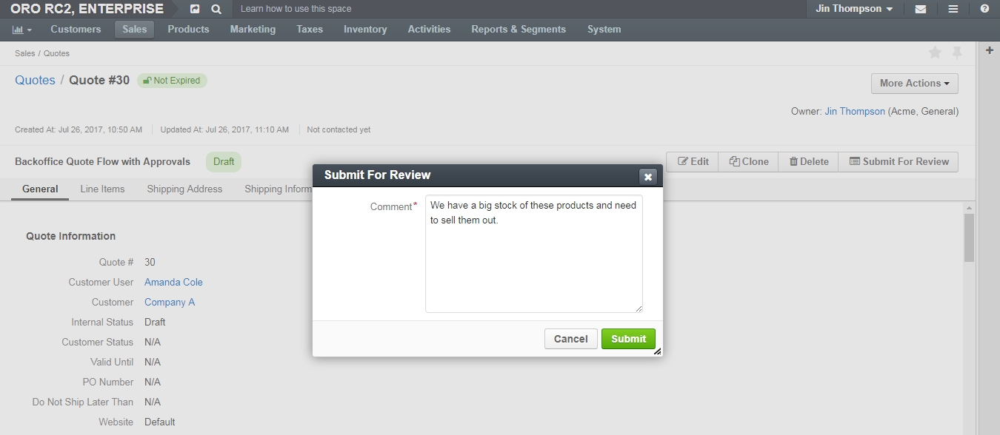Once submitted, the quote gets into the Submitted for Review status, which is indicated above the quote details. Jin cannot change the quote or call the submission back until the review is complete.
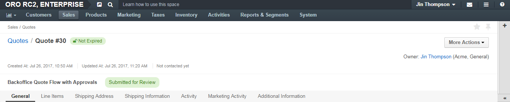If email notifications were configured, Damara (as the authorized approver) might get an email about the review request.
Sample email text:
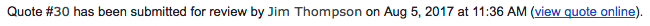Damara opens the quote submitted for review either via the link in the email or by looking it up in the quotes list using the filter by internal status (is any of “Submitted for Review”).
The following page opens:
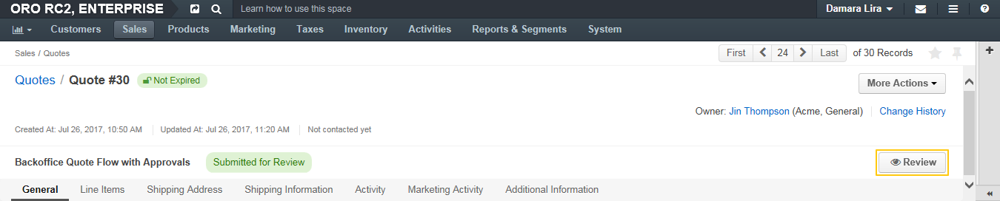Damara clicks Review to move the quote to the Under Review status and communicate to Jin that his request is being processed.
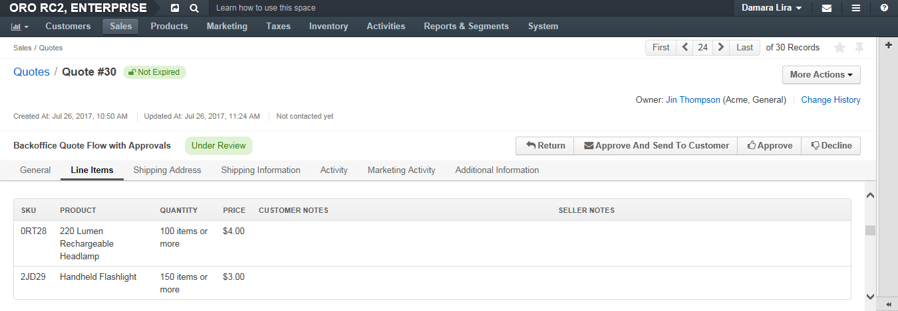The comment that Jin entered when submitting the quote for review is available in the quote’s activities section:
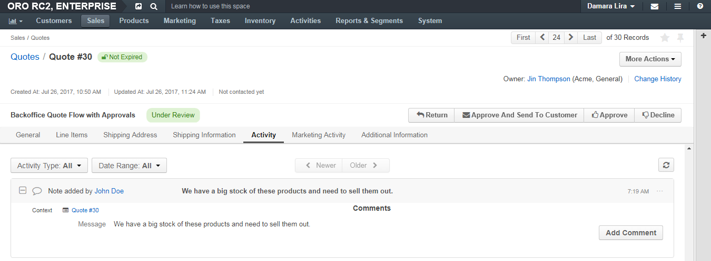Note
Once the quote is under review, Jin can see the updated status. However, transitions to further steps are disabled until the approval is gained.
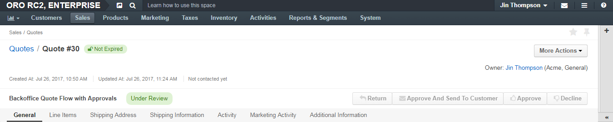As the modified price fits the current aggressive headlamp sale strategy, Damara approves the quote by clicking Approve and leaving a short message for Jim.
Note
Damara may use Approve And Send To Customer action if she is sure the quote is finalized.
This changes the quote status to Approved.
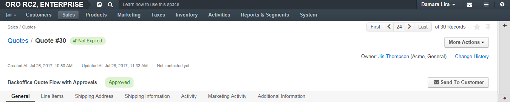If the email notifications were configured, Jin (as the one who requested approval) might get an email about the review outcome.
Sample email text:
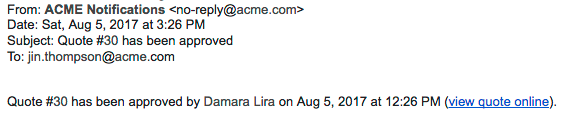Jin opens the approved quote either via the link in the email or by looking it up in the quotes list using the filter by internal status (is any of “Reviewed”).
The following page opens:
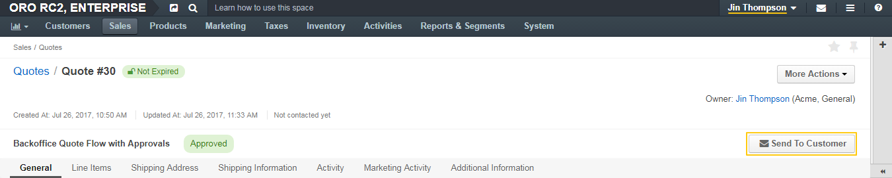Jin clicks Send To Customer and reviews the email draft. Additional recipients may be added to the To, CC, or BCC fields. The email body may be adjusted to be more personalized.
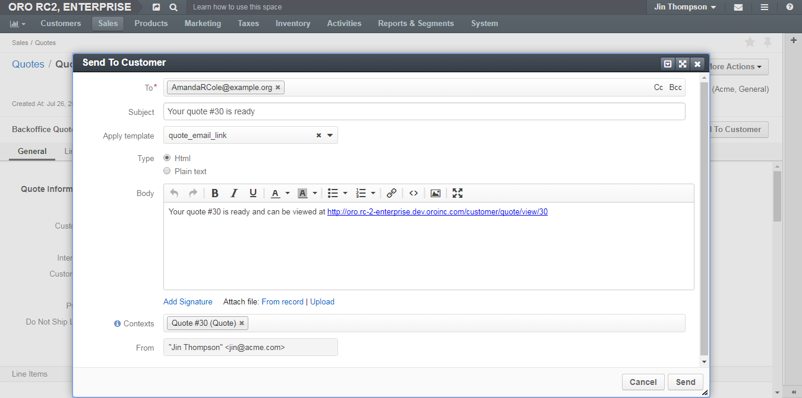When Jim is happy with the draft, he clicks Send.
After the quote is sent, Jin or the authorized approver (Damara) can perform the following actions with the quote:
In the storefront, the quote becomes available to the customer user it was created for:
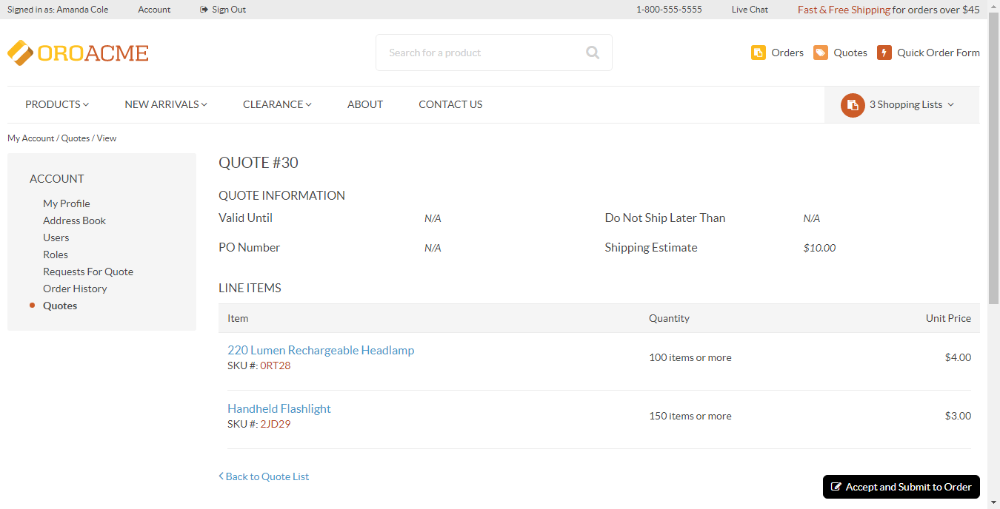Related Topics